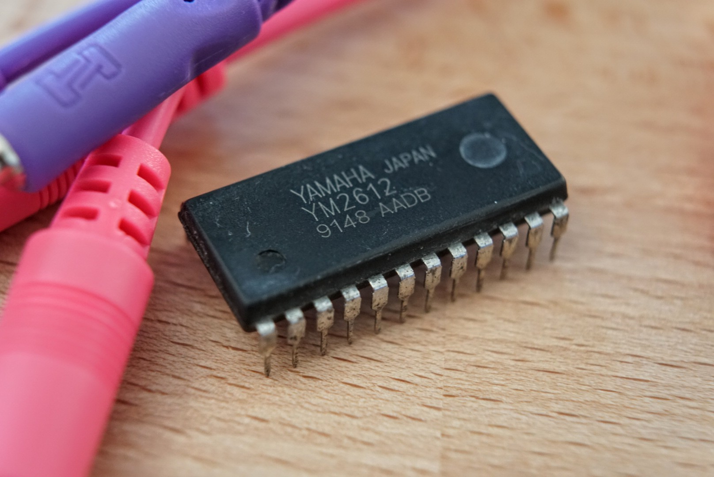

The YM2612 Reference Project

Welcome to the YM2612 Reference Project, an open-source, community-sourced reference for Yamaha's YM2612 and YM3438 sound chips.
Our goal is to eventually provide up-to-date, accurate, and complete documentation for these chips. It's still pretty early days, so if you're interested in helping please reach out on GitHub and we'll be happy to have you join us!
How to read this documentation
This documentation covers the YM2612 from an isolated prospective, as if it were the datasheet for the chip itself. Because of this there is likely going to be information here that isn't relevant to your use case. For example, if you're writing Mega Drive/Genesis games you won't find the electrical and timing information all that useful. However, it is our mission to be as comprehensive as cover as many use cases as possible. If you find this documentation lacking for your use case please file a bug on GitHub.
Historical background
TODO: Describe the lineage of the YM2612, the OPN family, and the successors.
Hardware that uses the YM2612
TODO: List all known hardware that uses the YM2612
Overview
TODO: Describe the basic operating principles of the YM2612: How it produces sounds, how many voices, how many operators, additional features, etc. Linking down into deeper sections as needed.
Sourcing the YM2612
TODO: List common sources for YM2612 chips, including eBay and salvage. Describe ways to test the YM2612
Electrical specifications
TODO: Show a pinout and pin description of the YM2612, including absolute minimum and maximum ratings.
Timing specifications
TODO: Show timing diagrams and timing guidelines for reads and writes.
Register overview
TODO: Include an overall map of the register address space with links to other sections for more details.
FM Algorithms
TODO: Include illustrations and descriptions of each of the seven algorithms.
Operator 1 feedback
The low-frequency oscillator
The timers
Channel frequency/note
TODO: Describe frequency & banks calculation.
Channel/note on/off
Operator parameters
Frequency
DT1, MUL
Envelope
TL, AR, D1R, D2R, D1L, RR
Rate scaling and modulation
RS, AM
SSG Envelopes
Channel 3 & 6 special mode
Additional resources
TODO